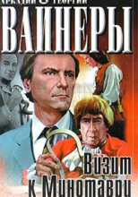

Аркадий Вайнер, Георгий Вайнер. Визит к Минотавру
РОМАН
* КНИГА ПЕРВАЯ. Вход в лабиринт
Глава 1 Улыбка Королевы
- Вы не хотите говорить, у кого побывали ключи?
-- спросил я, а она отрицательно замотала головой и хрипло сказала, глядя на меня невидящими глазами:
- Я честный человек! Я всю жизнь работаю, я копейки чужой за всю жизнь не взяла... Взгляните на мои руки, на ноги посмотрите -- а мне ведь всего сорок семь!
- Мне и в голову не приходило вас подозревать. Но замки целы, квартира открыта ключами. Поэтому я хочу выяснить, у кого в руках могли побывать ключи...
- Ничего я не знаю. Ключи у меня дома были.
- Ну, не хотите говорить -- не надо. Вы, Евдокия Петровна, живете этажом ниже?
- Да.
- Кто еще с вами там проживает?
- Муж. Сынок два месяца назад в армию ушел, дочка замужем -- отдельно живет.
- Как вы обнаружили кражу? Из спальни вышла Лаврова.
- Леночка, можно вас на минуту?
Я быстро нацарапал на бумажке: "В отд. мил.: Обольников Сергей Семенович -- кто такой?" Лаврова кивнула и пошла в кабинет.
- Так что, Евдокия Петровна, как вы узнали?
- Поднялась и увидала, что дверь не заперта.
- Простите, а зачем поднимались?
Женщина судорожно крутила в руках поясок от халата.
- Ну... как зачем... проверить... все здесь в порядке?..
- Вас просили об этом хозяева?
- Нет... да, то есть они меня иногда просят об этом. Когда уезжают...
- И сейчас тоже просили?
- Да... не помню, но, по-моему, просили...
- А чем занимается ваш муж -- Сергей Семенович?
- Он шофером работает.
- Где он сейчас-то?
- В больнице.
- Ну-у, а что с ним такое?
Кровь бросилась ей в лицо, я увидел, как цементная серость щек стала отступать, сменяясь постепенно багровыми нездоровыми пятнами, будто кто-то зло щипал ее кожу.
-- Алкоголик он. В клинику на улице Радио его положили, -- медленно сказала она, и каждое слово падало у нее изо рта, как булыжник. -- Когда положили? -- Вчера. Приступ у него начался.
Я положил ручку на стол и постарался поймать ее взгляд, но, хоть она и смотрела на меня почти в упор, казалось, меня не замечала -- выцветшие серые глаза незряче скользили мимо.
-- Приступ? -- переспросил я не спеша. -- В этой болезни приступ называется запоем. Когда он запил? -- В пятницу, позавчера, -- она больше не плакала, говорила медленно, устало, безразлично.
Вошла Лаврова, положила передо мной листочек. Ее круглым детским почерком было торопливо написано: "Характеризуется крайне отрицательно. Пьяница, бьет жену, а раньше и детей, дважды привлекался за мелкое хулиг., неразборчив в знакомств. Работает шофером в таксомоторном парке, раньше был слесарем-лекальщиком 5-го разряда на заводе "Знамя".
-- Евдокия Петровна, а к мужу вашему, Сергею Семеновичу, ключи в руки не попадали? -- спросил я. Она шарахнулась, как лошадь от удара, и незрячие глаза ожили: задергались веки, мелко затряслись редкие реснички. -- В больнице он, говорю же я, в больнице, -- забормотала она быстро и беспомощно, и снова закапали -- одна за другой -- мутные градины слез. Да, сомнений быть не могло, Сергей Семенович, муженек запойный, папочка нежный, про ключики знал, держал он их в ручонках своих трясучих, это уж как пить дать...
-- Евдокия Петровна, я вам верю, что вы честный человек. Идите к себе домой и подумайте обо всех моих вопросах. И про Сергея Семеныча подумайте. Я понимаю -- он вам муж, кровь родная, но все-таки всему предел есть. Вы подумайте -- стоит он тех страданий, что вы из-за него принимаете сейчас? А я к вам попозже спущусь. У вас ведь телефона нет? -- Нет, -- покачала она равнодушно головой. -- Ну и хорошо, никто звонками вас отвлекать не будет. Часа через два я зайду.
Бессильным лунатическим шагом, медленно переставляя свои отечные, изуродованные венами ноги, пошла она к двери, и я услышал, как, уже выходя из комнаты, она прошептала:
-- Господи, позор какой... -...Халецкий снимал на дактопленку отпечатки пальцев со шкафа. Повернулся ко мне: -- Ну что? -- Трудно сказать. Ключи у него, во всяком случае, были. Работал раньше слесарем...
-- Думаете, навел? -- Не знаю. Алиби у него при всем том стопроцентное. В этой милой больничке режим -- будьте спокойны, оттуда не сбежишь на ночь. Но разрабатывать его придется всерьез. Да и на жену я надеюсь -- она мне обязательно сегодня про него что-нибудь поведает. -- Э, не скажите. Такие женщины если замыкаются -- то все, хоть лопни -- рта не раскроют.
-- Поживем -- увидим, -- сказал я и позвал Лаврову. -- Да? -- раздался ее голос из кабинета. -- Идите сюда, протокол будем писать здесь. Я снова уселся за стол, разложив листы протокола осмотра. -- Вы диктуйте, а я буду записывать, -- сказал я. -- Пожалуйста, -- кивнула она, будто так оно и было правильнее.
Халецкий, натянув тонкие резиновые перчатки, стоя на коленях, очень аккуратно -- один к одному -- начал подбирать с пола осколки стекла, складывая из них, как из мозаики, единую плоскость. На вощеном паркете, как свежие раны, были видны соскобы.
-- Исходные данные заполнили? -- спросила Лаврова. -- Заполнил. -- Пишите. Квартира расположена на пятом этаже, других квартир на лестничной клетке нет. Дверь изнутри обита белым листовым железом. Замки повреждений не имеют, ригели и запорные планки в порядке, на обвязке двери против замка заметна вмятина. По-видимому, вор проник в квартиру путем подбора ключей...
-- Та-ак, этого писать не будем. -- Почему? -- подняла голову Лаврова. -- В протокол надо вносить только факты, -- сказал я. -- А насчет вора -- это пока только мечтания... Ну-с, дальше. -- ...На полу в прихожей три обгоревшие спички...
Здесь же лежит проигрыватель, рядом, слева, черные мужские полуботинки новые... на нижней полке горки в беспорядке большие медали с надписями на английском, французском, немецком и японском языках -- в количестве одиннадцать штук, все на имя народного артиста СССР Льва Осиповича Полякова, окна в порядке, створки и рамы повреждений не имеют, форточки заперты на шпингалеты, опорные крючки которых довернуты и закреплены в обойме... слева на тумбе -- радиоприемник, на котором стоит бюст Полякова... работы скульптора Манизера...
-- Вы забыли про поднос на колесиках, -- сказал я, не отрываясь от записей. -- Это называется сервировочный столик. -- Тем более надо указать, -- усмехнулся я. -- До него еще не дошла очередь... -- Одну минуту. Ной Маркович, когда у вас дойдет очередь до сервировочного столика, посмотрите внимательно, нет ли на нем следов пальцев.
-- ...В спальне гардероб, встроенный в стену, раскрыт, одежда валяется на полу в беспорядке. Здесь же на полу туфли, сумки, чемодан импортный мягкий с разрезанной верхней крышкой... в кресле лежит подсвечник -- трехсвечный шандал с обгоревшими более чем наполовину свечами... На полу восемь листов сгоревшей бумаги, пепел значительно поврежден. Здесь же валяются принадлежности скрипичных инструментов... В спальне разбросаны вещи, белье, на полу --12 коробочек от ювелирных изделий... Лаврова положила на стол желтый металлический диск:
-- Это "Диск де Оро" -- золотая пластинка, которая была записана в честь Полякова в Париже. Здесь собрана его лучшая программа... -- Прекрасно, -- сказал я. -- Что, перекур? Давайте передохнем, закончим общее описание и тогда составим протокол на каждую комнату в отдельности.
-- А зачем отдельные протоколы? -- Перестраховка. Если мы с вами, Леночка, не справимся с этим делом, то хоть протокол надо составить так, чтобы и через десять лет следователь, взяв его в руки, представил обстановку так же ясно, как мы видим ее сейчас. -- Откуда такой пессимизм, Станислав Павлович? -- Это не пессимизм, Леночка. Это разумная предосторожность. В нашем деле всякое случается. -- Но ваша любимая сентенция -- "нераскрываемых преступлений не бывает"?
-- Полностью остается в силе. Если мы с вами не раскроем, придет другой человек на наше место -- более талантливый, или более трудолюбивый, или, наконец, более удачливый -- тоже не последнее дело. -- А если и тому не удастся? -- Тогда, наверное, нам отвинтят головы. -- Ой-ой, это почему? Перед законом все потерпевшие равны -- независимо от их должностного или общественного положения. По-моему, я это от вас и слышала.
Я засмеялся; -- Я и не отказываюсь от своих слов. Но было бы неправильно, если бы мы позволили ворюгам безнаказанно шарить в квартирах наших музыкальных гениев. -- Понятно. А в квартире обыкновенного инженера можно? Я с интересом взглянул на нее, потом сказал: -- Эх, Леночка, мне бы вашу беспечность. От нее независимая смелость ваших суждений.
-- Подобный выпад нельзя рассматривать как серьезный аргумент в споре, -- спокойно сказала Лаврова. -- Это верно, нельзя. Скажите, вам никогда не приходило в голову, что наша работа в чем-то похожа на шахматную игру?
-- А что? -- А то, что нельзя играть в шахматы, видя перед собой только следующий ход. В шахматах побеждает тот, кто может намного вперед продумать свои ходы и их железной логикой навязать противнику удобную для себя контригру -- чтобы она ложилась в рамки продуманной тобой комбинации... -- Какой же вы продумали ход? -- К сожалению, в наших партиях противник всегда играет белыми -- первый ход за ним. Причем, вопреки правилам, ему удается сделать сразу несколько.
-- Ну, е2 -- е4 он сделал. Каковая связь с нашим спором? Я задумался, будто забыл о ней, потом спросил:
-- Не понимаете? Сейчас приедет хозяин квартиры -- народный артист СССР, лауреат всех существующих премий, профессор консерватории Лев Осипович Поляков. Он, как вам это известно, гениальный скрипач. Теперь он еще называется потерпевший. И подаст нам заявление, которое станет документом под названием лист дела номер два. Вот тут мы с вами можем узнать, что есть еще один потерпевший... Этого я боюсь больше всего... -- Кто же этот потерпевший?
В прихожей хлопнула дверь. Я обернулся. В комнате стоял Поляков.